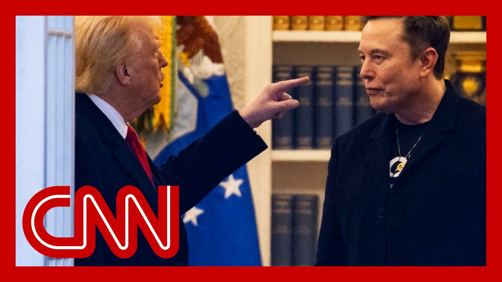

【马斯克呼吁弹劾特朗普总统】
Summary: The relationship between Elon Musk and Donald Trump has deteriorated into a public feud, with Musk calling for Trump's impeachment and Trump threatening to cut Tesla's government subsidies, escalating tensions over policy disagreements and personal attacks.
摘要： 埃隆·马斯克与唐纳德·特朗普的关系恶化成公开争执，马斯克呼吁弹劾特朗普，而特朗普威胁取消特斯拉的政府补贴，政策分歧和个人攻击使紧张局势升级。

⏱️ Estimated Reading Time: 19 min
📚 高考3500生词 📚 雅思生词 📚 托福生词 📚 GRE生词 📚 UP主推荐生词
The president's biggest campaign donor, who was so close that Trump invited him to sleep at the white House, is now calling for him to be impeached and replaced by Vice President J.
总统最大的竞选捐助者曾与特朗普关系密切，甚至被邀请入住白宫，如今却呼吁弹劾他并由副总统J接任。
The man, who was handed nearly unfettered access to the federal government is openly musing about forming his own political party.
这位曾几乎不受限制地接触联邦政府的人，现在公开考虑组建自己的政党。
And the same guy, the billionaire, backing the US space program.
而正是这位亿万富翁，曾支持美国的太空计划。
He's now threatening to take his money and go home.
他现在威胁要撤资退出。
What at this time, yesterday was a one sided attack on the president's signature spending bill is no longer just a policy disagreement.
昨天还只是对总统标志性支出法案的单方面攻击，如今已不仅仅是政策分歧。
Not even close.
远非如此。
It has now become quite personal as the president says he thinks he knows why.
现在已变得相当个人化，总统表示他自认为知道原因。
Well, look, you know, I've always liked you, and it's.
好吧，听着，你知道我一直喜欢你，而且……
I was very surprised you saw the words he had for me, the words for.
我对你看到他对我的那些话感到非常惊讶。
And he hasn't said anything about that's bad.
而他对此只字未提，这很糟糕。
I'd rather have him criticize me than the bill, because the bill is incredible.
我宁愿他批评我而不是法案，因为这项法案非常了不起。
It's the biggest cut in the history of our country.
这是我们国家历史上最大规模的削减。
We've never cut it's about 1.6 trillion in cuts.
我们从未削减过约1.6万亿美元的支出。
Leland's upset because we took the EV mandate.
利兰很生气，因为我们取消了电动汽车强制令。
And, you know, which was a lot of money for electric vehicles.
你知道，那原本是电动汽车的一大笔资金。
they're having a hard time for electric vehicles, and they want us to pay billions of dollars in subsidy.
电动汽车行业处境艰难，他们却希望我们支付数十亿美元的补贴。
And, you know, I, I the Elon knew this from the beginning.
而且，你知道，埃隆从一开始就知道这一点。
As Trump was speaking from the Oval Office, Elon Musk responded in real time, writing this, quote, false.
当特朗普在椭圆形办公室讲话时，埃隆·马斯克实时回应，写道：“虚假。”
This bill was never shown to me even once, and was passed in the dead of the night so fast that almost no one in Congress could even read it and quote what.
这项法案从未向我展示过一次，且在深夜迅速通过，国会几乎无人来得及阅读。
Keep the EV solar incentive cuts in the bill, even though no oil and gas subsidies are touched.
尽管石油和天然气补贴未受影响，法案仍保留了削减电动汽车和太阳能激励的措施。
Very unfair.
非常不公平。
But ditch the mountain of disgusting pork in the bill.
但应废除法案中大量令人作呕的浪费性支出。
And with a German Chancellor sitting by his side today with the president there in the heat he said what he had been bottling up really for days now.
今天德国总理坐在他身旁时，总统终于说出了憋在心里多日的话。
You saw a man who was very happy when he stood behind the oval desk and, even with a black guy, I saw do you want a little make up?
你曾看到他在椭圆形办公桌后非常开心，甚至问一个黑人是否需要补妆。
What can you do to make up?
你能做些什么来弥补？
But he said, no, I don't think so, which is interesting.
但他说：“不，我不这么认为。”这很有趣。
He's worn the hat.
他戴过那顶帽子。
Trump was right about everything and I am right about the great, big, beautiful we call it a great big, beautiful because that's what it is.
特朗普在所有事情上都是对的，而我对这个伟大、宏大、美丽的事物也是对的——我们称之为伟大、宏大、美丽，因为它确实如此。
I don't know what it is.
我不知道它是什么。
It's sort of Trump Derangement Syndrome I guess they call it.
我想他们称之为“特朗普精神错乱综合征”。
But I we have it with us too.
但我们也有类似情况。
They leave and they wake up in the morning and the glamour's gone.
他们离开后，早上醒来时魅力已消失。
The whole world is different and they become hostile.
整个世界变了，他们变得充满敌意。
Someday you'll write a book about and you'll let us know.
总有一天你会写一本书并告诉我们。
Not to be outdone, Musk posted in response to that quote, without Trump would have lost the election, Dems would control the House, and Republicans in the Senate would be 51 to 49.
不甘示弱，马斯克发帖回应：“没有特朗普，共和党会输掉选举，民主党将控制众议院，参议院共和党席位将是51比49。”
Such ingratitude, he added, as the white House was scrambling to react to all of this as it was playing out in real time today, with aides now forced to attack the person they have been defending for months in front of the camera.
“如此忘恩负义，”他补充道。白宫匆忙应对实时发生的一切，助手们被迫在镜头前攻击他们数月来一直辩护的人。
Look at this.
看看这个。
You can still see the imprint of on the white House, that red Tesla that the president bought from him or Jay McMichael shot this.
你仍能看到白宫上那辆红色特斯拉的印记，总统从他或杰伊·麦克迈克尔那里购买的。
It was still sitting right outside the West Wing park on West Exotic.
它仍停在西翼公园外的西异域区。
And he's a great patriot.
他是个伟大的爱国者。
And he's also done an incredible with Tesla.
他在特斯拉方面也做出了惊人成就。
And I mean, nobody else has a car company started up in the last 30 years that's been successful.
我是说，过去30年没有其他初创汽车公司取得如此成功。
I don't think so.
我不这么认为。
I love Tesla.
我爱特斯拉。
It's not clear if he still feels the same way today.
不清楚他今天是否还这么想。
Today the president declared that Elon was wearing thin.
今天总统宣称对埃隆的耐心已耗尽。
I asked him to leave.
我让他离开。
I took away his EV mandate that forced everyone to buy electric cars that nobody else wanted, that he knew for months I was going to do and he just went.
我取消了他的电动汽车强制令，该令迫使所有人购买没人想要的电动车，他早知道我会这么做，却还是走了。
Then came the threat that could really hurt.
随后是可能真正造成伤害的威胁。
The president said.
总统说。
The easiest way to give to save in our budget, billions and billions of dollars is to terminate Elon's government subsidies and contracts.
节省预算中最简单的方法就是终止埃隆的政府补贴和合同，可节省数百亿美元。
I was always surprised that Biden didn't do it.
我一直惊讶拜登没这么做。
Tesla's stock price took a massive hit after that $150 billion in market value gone as the two were trading attacks according to Bloomberg.
据彭博社报道，两人互相攻击期间，特斯拉股价暴跌，市值蒸发1500亿美元。
Elon Musk lost $34 billion today.
埃隆·马斯克今天损失了340亿美元。
That financial hit, though, does not seem to be enough for his critics in a world this guy is all over the map, he's right, but he's emblematic of these oligarchs.
然而，对批评者来说，这样的财务打击似乎还不够，他们认为他反复无常，虽有时正确，却是这些寡头的典型代表。
All of them had the maturity of a nine year old, and they're dangerous.
他们都有九岁孩子的幼稚，且很危险。
They're dangerous not just to the president of United States.
他们不仅对美国总统构成威胁。
More importantly, they're dangerous to this republic and the citizens of this constitutional republic.
更重要的是，他们危及这个共和国及其公民。
At one point, the president seemed to maybe be trying to cool things off.
某刻，总统似乎试图缓和局势。
He said, quote, I don't mind Elon turning against me but he should have done this months ago.
他说：“我不介意埃隆反对我，但他本该几个月前就这么做。”
And I'm told that allies of both the president and Musk were kind of caught in the middle of all of this today.
据悉，总统和马斯克的盟友今天都夹在中间左右为难。
They were quietly and delicately trying to broker peace between the two men behind the scenes.
他们私下谨慎地试图调解两人关系。
But those efforts were upended when Elon Musk wrote this.
但当埃隆·马斯克写下这些时，努力付之东流。
This was really kind of the end.
这真的像是终结。
He said, time to drop the really big bomb.
他说：“是时候投下真正的重磅炸弹了。”
Donald Trump is in the Epstein files.
唐纳德·特朗普在爱泼斯坦文件中。
That is the real reason they have not paid public.
这就是他们未公开的真正原因。
Have a nice day DJT.
祝你好运，DJT。
Now, I should note tonight there's no evidence when it comes to what this looks in terms of the Epstein files.
现在，我必须指出，关于爱泼斯坦文件的内容尚无证据。
Beyond that, the white House says his bomb is an unfortunate episode, and several people familiar with what was happening behind the scenes described the Epstein tweet to me as the tipping point, though in this relationship, now, fearing that there is no going back.
此外，白宫称他的炸弹是“不幸事件”，几位知情人士向我描述这条爱泼斯坦推文是关系转折点，现在恐怕无法挽回。
We have a full house of deeply sourced insiders to start us off on what is a remarkable day at the white House, San Antonio Sullivan and Brian Stelter, and also POLITICO's Dasha Burns and the Associated Press's Sungmin, Kim, Dasha, I mean, I just want to know what you're hearing from people at the white House tonight, because what we were hearing is, yes, this was a breakup that was predictable.
我们有一屋子消息灵通的内部人士为我们开启白宫这非凡的一天——圣安东尼奥·沙利文、布莱恩·斯特尔特，还有POLITICO的达莎·伯恩斯、美联社的成民、金、达莎，我想知道你们今晚从白宫听到了什么，因为我们听说这次决裂虽在预料之中……
But even people inside the white House did not see it going down like this.
但连白宫内部人员也没料到会如此发展。
And as fast as it happened today I mean, the group chats inside the white House were just on fire today, people comparing it to a saying, yeah, we thought it was going to happen but maybe, maybe not until the fall or in a few months.
且今天事态发展之快——白宫内部群聊今天炸开了锅，人们将其比作“我们料到会发生，但或许要到秋天或几个月后”。
What have you been hearing from people tonight?
你们今晚听到了什么？
Yeah, my phone's been just absolutely blowing up people inside the white House.
是的，我的手机被白宫内部人士打爆了。
People on the Hill.
国会山的人也是。
I mean, the divorce analogies are rampant right now.
现在“离婚”类比满天飞。
Look, it was the ferocity, the how quickly this happened.
关键是激烈程度和速度。
And once he started going down the hole of the Epstein files, that's when the conversation with the white House allies and people inside of the white House really shifted.
一旦他提及爱泼斯坦文件，白宫盟友和内部人士的讨论就彻底转向了。
As I was communicating with folks all day, they were saying, this is now going into Crazytown.
我整天与人沟通时，他们都说：“这已进入疯狂状态。”
They were people were telling me the president is concerned about Elon Musk's well-being, that you saw the reporting as we all did from the times around, the drug use.
有人告诉我总统担心埃隆·马斯克的健康，就像我们都看到的《纽约时报》关于吸毒的报道。
They didn't expect it to go quite in this direction.
他们没料到会朝这个方向发展。
And at this point, you know, earlier on, people were saying, look, these are two titans.
早些时候人们还说：“这是两位巨头。”
They're clashing, but they'll they'll come back together.
他们在冲突，但终会和好。
Now it seems like the the hope for any sort of reconciliation is gone.
现在和解的希望似乎已破灭。
And the goal is just to try to turn the temperature down here.
现在目标只是试着降温。
I mean, that's really the question here is how you turn the temperature down when you have got these two major personalities, two alphas who are trying to essentially outdo one another in terms of, of inflicting harm.
问题是：当两位主导型人物互相伤害时，如何降温？
Now that this relationship is we watching it totally implode.
现在我们正目睹这段关系彻底破裂。
Yeah.
是的。
Elon Musk and Donald Trump hate each other where it hurts the most.
埃隆·马斯克和唐纳德·特朗普在最痛处憎恨彼此。
They hate each other's egos.
他们厌恶对方的自负。
And for Elon Musk, Donald Trump really hit at his wallet.
而对埃隆·马斯克，特朗普直击其钱包。
So it's really difficult to see what the two sides can do to at even turn the temperature down a little.
因此很难看出双方如何哪怕稍作缓和。
But this fight could have released your actual contact lenses for President Trump's agenda.
但这场争斗可能真正危及特朗普的议程。
I was really fascinated by some of the early comments we're getting from Republican lawmakers on Capitol Hill about the impact on that so-called one big, beautiful bill.
我对国会山共和党议员关于所谓“宏大美丽法案”影响的早期评论很感兴趣。
I mean, there's Ryan Zinke, a Republican from Montana.
比如蒙大拿州共和党人瑞安·津克。
He was interior secretary for President Trump in his first term.
他曾是特朗普首任内政部长。
And he said that it's you know, you have the richest man in the world and you have the most powerful man in the world going up against each other.
他说：“世界上最富有的人与最有权势的人对抗。”
It really does put it can put the bill in serious jeopardy.
这确实可能使法案岌岌可危。
And while I'm a little bit skeptical about how much, I was a little skeptical at this point about how much power Elon Musk will have at this point.
尽管我有点怀疑埃隆·马斯克此时能有多大影响力。
I think a lot of his power, within the Republican Party, comes from his proximity to Donald Trump.
我认为他在共和党内的权力多源于与特朗普的密切关系。
But it certainly doesn't help when the fate of the bill is already very much teetering on the edge.
但法案命运已悬于一线时，这肯定无益。
Yeah.
是的。
And don't you know, when it comes it started out just, you know, this policy fight on over what was happening on Capitol Hill.
要知道，起初这只是国会山的政策之争。
Obviously, anyone who crosses Trump should expect to face his wrath.
显然，任何与特朗普作对的人都应预料到他的愤怒。
It was actually surprising how long he took to respond to Elon.
他花了这么久才回应埃隆，其实令人惊讶。
But on the Epstein files, I think just I just to properly convey to people who may not be on Twitter as much as you and I are, it is the lowest of the low insults to to say to someone in right wing or the right wing atmosphere, oh, you're in the Epstein files.
但关于爱泼斯坦文件，我想告诉不常上推特的人：在右翼圈子里说“你在爱泼斯坦文件中”是最恶毒的侮辱。
Yes, I that really is.
确实如此。
You know, that is the Kryptonite.
这就是氪石（致命弱点）。
And maybe why Trump finally responded.
或许这就是特朗普最终回应的原因。
Right.
没错。
I mean, when it comes to when it comes to the Epstein files, Epstein lists whatever folks want to call us.
关于爱泼斯坦文件或名单，无论人们怎么称呼。
It doesn't actually matter what in reality.
现实中内容并不重要。
I mean, there have been names that have been associated with Jeffrey Epstein that have been released through court documents.
已有与杰弗里·爱泼斯坦相关的名字通过法庭文件公布。
Trump's name came out in documents last year, but there was absolutely no accusation of wrongdoing, on Trump's part whatsoever.
特朗普的名字去年出现在文件中，但对他没有任何不当行为指控。
But his name was as a, as a as somebody who knew Epstein.
但他作为认识爱泼斯坦的人被提及。
what is most important, though, is what people and the MAGA verse imagine what this lists is to be.
最重要的是MAGA群体如何想象这份名单。
And this they imagine, is a list of all the bad people, all the bad people who went to Epstein's island and you know, abused young women and did other criminal things.
他们想象这是所有坏人——去过爱泼斯坦岛、虐待年轻女性或从事其他犯罪活动者的名单。
and what people also believe is that list is made up of Trump's enemies normally.
人们也普遍认为，这份名单通常是由特朗普的敌人组成的。
We see, there's been many versions of that that's circulated online.
我们看到，这份名单已经有多个版本在网上流传。
They did this to themselves because it's the Trump orbit that amplified the conspiracy theories about Jeffrey Epstein's list,
这其实是他们自找的，因为正是特朗普圈子放大了关于杰弗里·爱泼斯坦名单的阴谋论，
and who was on it, and what it meant about those people.
包括谁在名单上，以及这对那些人的意义。
And so for Elon Musk to say that that is why that kind of takes this to this other level doesn't mean anything.
所以当埃隆·马斯克说这就是问题所在、是这件事升级的原因时，其实并没有任何意义。
It doesn't mean that there was wrongdoing.
这并不意味着真的有人做错了什么。
We don't know that.
我们并不清楚真相。
No, but there's already pictures and Jeffrey Epstein together.
没错，但确实已经有特朗普和杰弗里·爱泼斯坦一起的照片。
We knew he was a member at Mar-A and then was was was removed from the club.
我们知道爱泼斯坦曾是海湖庄园的会员，后来被开除了。
But it was kind of the right turning on the right here 100%.
但这确实是右翼阵营内部的互相攻击，完全是“右派打右派”。
And there is going to be a situation now where people have to choose sides, right?
而现在局势发展到一个地步，人们不得不选边站队了，对吧？
GOP lawmakers are already asking themselves magazine, Trump or Musk. I'm sure most of them will choose Trump.
共和党的议员们现在已经在问自己，是支持特朗普还是马斯克。我敢肯定，他们中的大多数最终会选择特朗普。